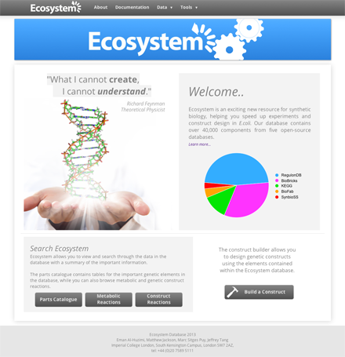

Web Work
LoveKnitting and LoveCrochet

E-commerce product management for LoveCrafts, starting with www.loveknitting.com we have launched a US warehouse, a German language localisation, launched www.lovecrochet.com and had several rounds of redesign and added responsiveness.
MSc: Data Analysis Project

A bioinformatics statistical analysis project completed over 3 months with the final report presented as a website. Take a look!
MSc: Team Software Development Project
As part of a a team of 4 students we created a web resource to combine 5 open source databases into one master database that would help scientific researchers design DNA sequences for research more easily in E.coli.
I was responsible for parts of data processing and database design and solely responsible for front end development, including a drag and drop tool for building DNA sequences (see here).